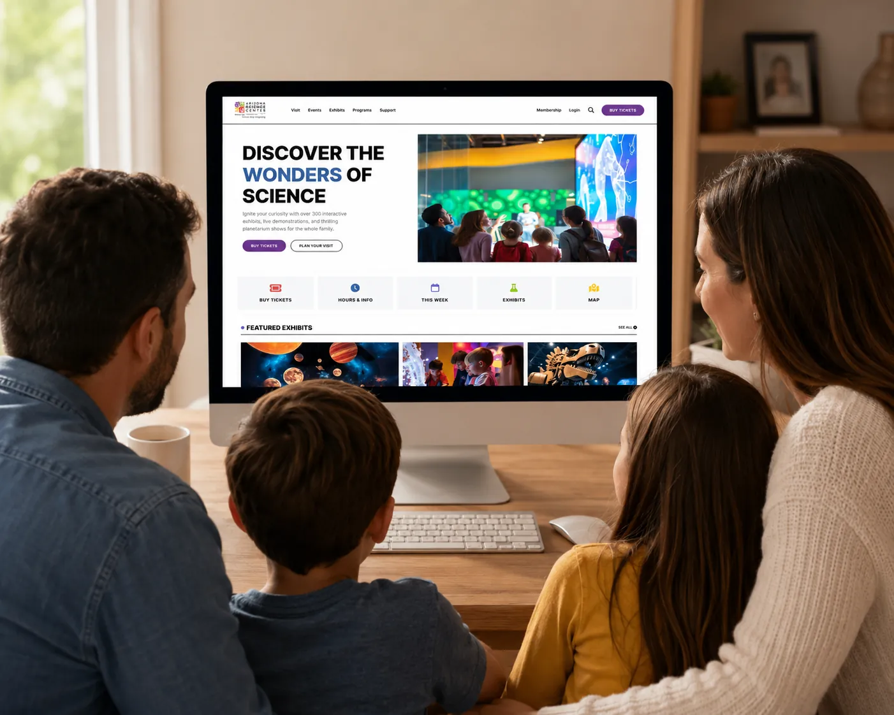
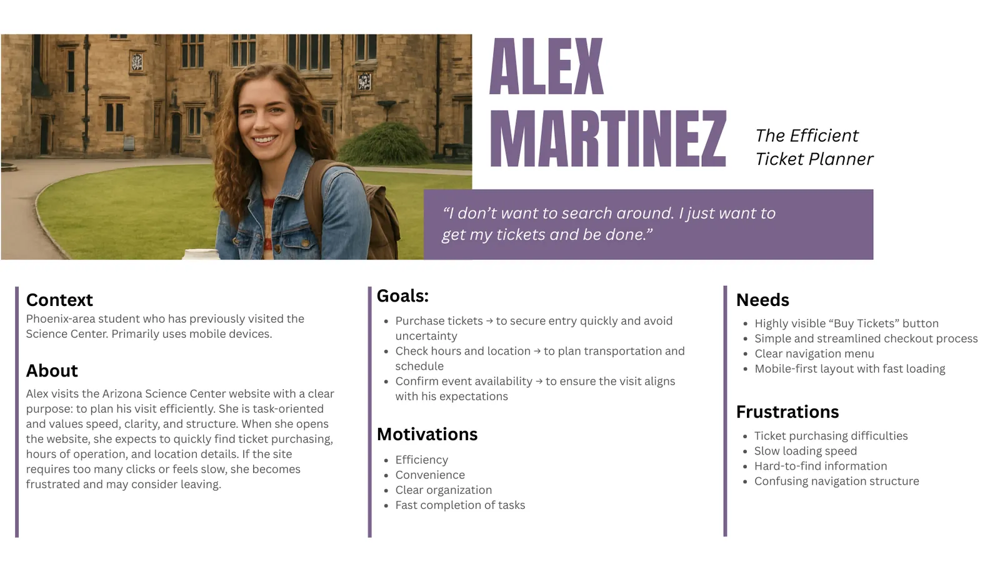
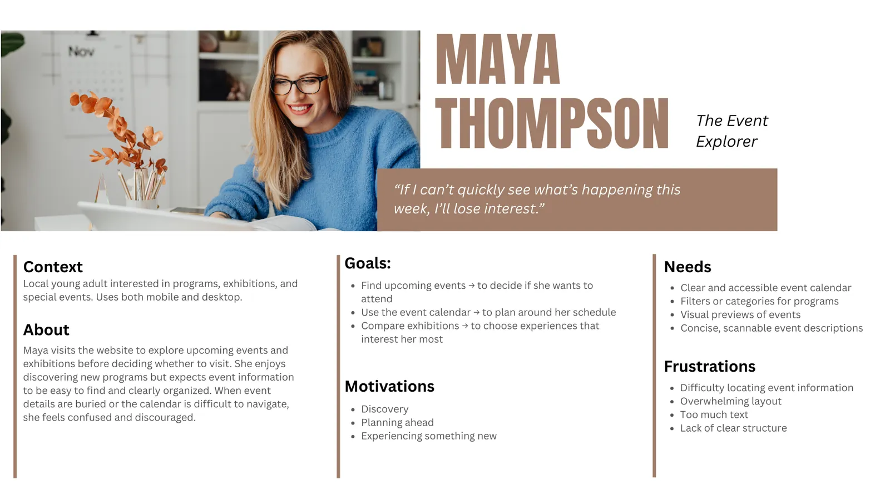
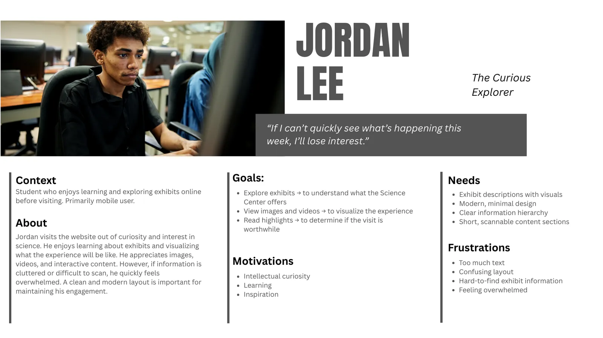
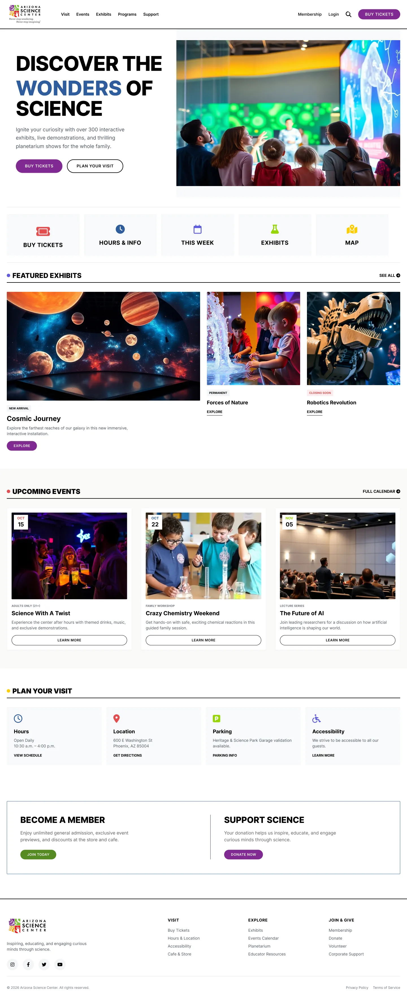
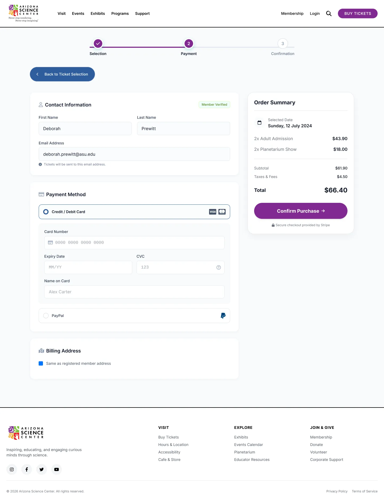
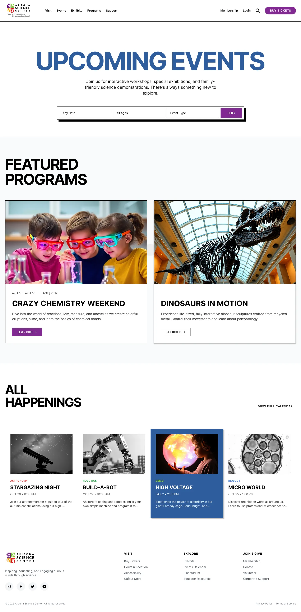

“Buy Tickets” leads nowhere
The nav item takes users to a page with no way to purchase. Exhibition selections redirect without explanation.
← My works/ 02
UX research & redesign · Fall 2025
Planning a family trip to a science museum shouldn't feel like a puzzle. We audited azscience.org and rebuilt the pages where people kept getting stuck.

The problem
People couldn't figure out how to buy a ticket, find an event, or plan a basic visit. The navigation was broken and the ticket flow just didn't go anywhere.
What we did
We rebuilt the three pages people struggled with most: home, tickets and events, based on a heuristic evaluation, an accessibility audit, surveys and usability tests.
azscience.org is how most people plan their visit to the Arizona Science Center. The three of us ran a full UX audit and rebuilt the pages where people kept getting stuck, so the site would finally be clear enough to just scan and go.
Each of us went through the site on our own using Nielsen's heuristics, and we flagged the exact same critical issues at the exact same severity. That's when we knew the problems weren't just our opinion.
The nav item takes users to a page with no way to purchase. Exhibition selections redirect without explanation.
During ticket purchasing, users are never told what's happening, so they get lost mid-flow.
Two competing nav bars behave differently on every page, breaking consistency and predictability.
Event content is hard to find and scan, even though users ranked events as a top priority.
Between the survey and nine moderated usability sessions, we kept hearing the same story: people were curious to explore, but friction wore them down, and nobody walked away feeling confident.
“I couldn't figure out how to actually buy a ticket. I kept getting sent to pages that didn't let me purchase anything.”
Survey participant · Ticket flow
“I wanted to see what events were happening, but I couldn't find them without digging through the whole site.”
Survey participant · Event discovery
Every participant hit friction trying to buy a ticket, and not one of them felt confident afterward.
Research synthesis · 27 surveys + 9 usability tests
We ran WAVE and WCAG-informed manual checks. The site does have an accessibility menu, but it only lets you pick one profile at a time.
People's needs overlap. Forcing one choice locks out the exact people the feature was built for.
The patterns in our survey responses shaped three personas. Each wanted something different from the site, but they all ran into the same walls.



Scroll sideways →
All nine people finished their tasks, but almost every session hit the same walls: scrolling to the footer for basic info, clicking sidebar items that did nothing, or being sent through a ticket flow with zero explanation.
Finishing a task didn't mean the experience worked. People admitted far more uncertainty afterward than their think-aloud let on.
Every change came straight out of what we found in testing: a clearer hierarchy, fewer dead ends, and a next step that's always obvious.



A clickable walkthrough of all three pages. Go ahead and buy a ticket.
Reflection
Designing from research means trusting what people did over what they said afterward. The real finding wasn't in the survey answers; it was in the gap between finishing a task and still feeling unsure. Completion rates alone would never have shown us that.
Next project · 03
Armoni
A warm, cohesive brand world, from logo and mascot to stationery, signage and a website.